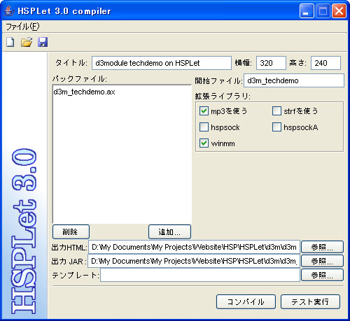

コンパイラの使い方
目次
画面の説明

- タイトル
-
生成される HTML ページのタイトルを指定します。
- 横幅
-
生成されるアプレットの横幅を指定します。
- 高さ
-
生成されるアプレットの高さを指定します。
- パックファイル
-
アプレットのファイルに一緒に詰め込むファイルを指定します。
HSP の PACKFILE を選択することも、それ以外のファイルを自由に選ぶこともできます。
パックファイルに選択されたファイルは、コンパイルすると出力JARの中に一緒に格納されます。
HSPLet は JAR が置いてあるサーバーからネットワーク越しにファイルを読み込めるので、必要なファイルをすべてパックファイルに入れておく必要はありません。
パックファイルに入れておくと、アプレット開始前に先にダウンロードされるので途中で読み込みに時間がかかるということがなくなります。
逆にmp3等の大きなファイルはダウンロードに時間がかかってしまうので、サーバーにおいてストリーミング再生した方が良いです。
パックファイルに選択されたAXファイルがコンパイルの対象になります。
「開始ファイル」が空のときは選択したaxファイル名が自動的に補完されます。
普通のファイルと違って、AXファイルは必ずパックファイルに入っていないと実行できないので注意してください。
- 開始ファイル
-
アプレットの開始AXファイル名を指定します。
拡張子はつけないでください。
開始ファイルに指定しなかったAXファイルもrun命令で実行することができます。
- 拡張ライブラリ
-
追加で使用するライブラリを選択します。
mp3の再生、strfはファイルサイズの肥大化を防ぐために別ライブラリになっています。
それ以外のライブラリを使うときもここのチェックをつけてください。
チェックをつけたライブラリはアプレットから使用するように設定され、自動的に「出力HTML」と同じフォルダにコピーされます。
- 出力HTML
-
生成する HTML のファイル名を指定します。
この名前で HTML が生成され、コンパイルによってできた JAR、hsplet.jar、および拡張ライブラリが同じフォルダにコピーされます。
出力HTMLが指定されていないときはJARファイルだけが生成され、ファイルのコピーは行われません。
- 出力JAR
-
生成するJARファイル（アプレットの本体）のファイル名を指定します。
通常 HTML と同じ名前でかまいません。
- テンプレート
-
生成する HTML のテンプレートを指定します。
テンプレート内の {XXXXX_YYY} のように括弧で囲まれた範囲をコンパイラによって生成された情報で置き換えることでHTMLを生成します。
指定しなかったときは内部的に保持しているシンプルなテンプレートが使用されます。
詳細は sample-template.html をテキストエディタで開いてください。
- コンパイル
-
コンパイルを実行し、必要なファイルをコピーします。
- テスト実行
-
自動的にコンパイル後、アプレットをテスト起動します。
テスト実行中はファイルやネットワークへの接続の制限が無いので、サーバーと通信する必要があるプログラムをサーバーにアップロードする前に動作確認したいときなどに便利です。
メニュー・ツールバーコマンド
- 新規作成
-
入力内容をすべて空にしてやり直します。
- 開く
-
前回保存しておいた設定内容を読み込みます。
- 上書き保存
-
設定内容を保存しておき次回から同じ設定内容のアプレットを簡単に作れるようにします。
新規作成直後は「名前をつけて保存」の動作になります。
- 名前をつけて保存
-
設定内容に別名をつけて保存します。
- 終了
- コンパイラを閉じます。
HSPLet 3.0 © 2005-2006 Yuki.
Logo Illustration © 2001-2004 chokko.
All rights are reserved.
http://www.group-finity.com/